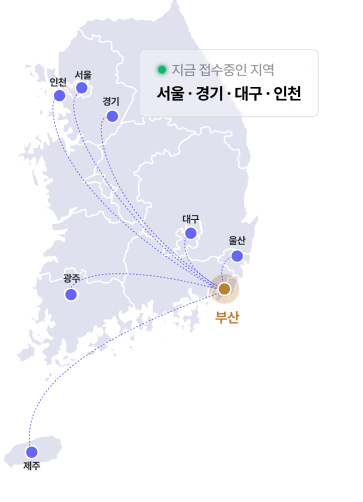
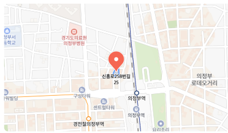

배우자 모르게 가능할까?
가족에게 알리기 어려운 상황이라면, 상담 단계에서 비밀 유지와 절차상 체크포인트를 먼저 안내합니다.
상담비밀유지100%평균검토기간3~5일
최대 감면율 94%, 평균 감면율 90%의 실제 사례 데이터를 바탕으로
배우자 모르게 · 주택경매 없이 · 재회생 · 최근대출 · 도박·주식·코인 채무까지 사안별 가능성을 검토합니다.
상담 내용은 철저히 비공개로 보호되며, 개인 정보는 익명으로 처리됩니다.
국가 법원이 마련한 [공적 회생제도] 입니다
개인회생은 빚을 없애는 마법이 아니라,
현재 소득과 생활비를 기준으로 다시 갚을 수 있는 변제계획을 세우는 법률 절차입니다.
채무 · 소득 · 재산을 정리해
객관적으로 점검합니다.
현재 소득 · 생활비를 기준으로
변제계획을 세웁니다.
인가 결정 이후 변제계획대로
진행 → 면책까지
최의곤 법률사무소는 부산 해운대 센텀에 위치해 있지만,
전화 · 카톡 · 비대면 상담을 통해 전국 어디서든
개인회생 상담과 접수 안내가 가능합니다.

배우자 모르게 · 주택경매 없이 · 재회생 · 최근대출 · 도박·주식·코인 채무까지
다양한 사안의 상담이 실시간으로 접수되고 있습니다.
※ 접수 피드의 모든 개인정보는 익명화되어 있으며, 사례 정보는 상담 동의 범위 내에서만 노출됩니다.
지금 내 상황도 접수하기 →
최의곤 법률사무소는 실제 사례 데이터를 바탕으로
개인별 감면 가능성과 변제 방향을 검토합니다.
채무금액, 소득, 부양가족, 재산, 특이사항을 기준으로
개인회생 가능성과 예상 변제 방향을 먼저 확인합니다.
“이런 상황도 회생이 될까?” 대부분의 어려운 사안도 일단 검토해보면,
시도해볼 만한 선택지가 남아 있는 경우가 많습니다.
가족에게 알리기 어려운 상황이라면, 상담 단계에서 비밀 유지와 절차상 체크포인트를 먼저 안내합니다.
주택담보대출이 있더라도 시세, 담보잔액, 연체 여부를 기준으로 경매 위험과 회생 가능성을 함께 검토합니다.
과거 면책 또는 회생 이력이 있더라도 기간, 채무 발생 사유, 현재 소득을 기준으로 다시 검토합니다.
원인이 불리하게 작용할 수 있지만, 무조건 포기하기보다 소명 방향과 변제계획을 함께 살펴보는 것이 중요합니다.
※ 위 사례는 이해를 돕기 위한 예시이며, 실제 결과는 개인별 상황과 법원 판단에 따라 달라질 수 있습니다.
혼자 고민하던 분들이 상담 후 가장 많이 말한 것은
“생각보다 시작이 어렵지 않았다”는 점입니다.
※ 개인정보 보호를 위해 상담 내용은 익명화하여 재구성할 수 있습니다.
성함 · 연락처 · 채무금액 · 소득만으로 먼저 가능성을 확인합니다.
부산이 아니어도 전화 · 카톡으로 상담을 시작할 수 있습니다.
진행이 필요한 경우에만 필요한 서류를 순서대로 안내합니다.
지금 필요한 건 모든 서류를 준비하는 것이 아니라,
내 상황이 개인회생으로 정리될 수 있는지 먼저 확인하는 것입니다.

부산광역시 해운대구 센텀북대로 60 14층 1413호
010-9942-1150
24시간 연중무휴 상담 접수
전화, 카톡, 비대면, 대면 (예약)